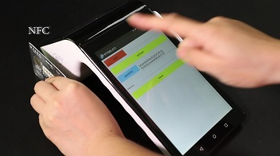
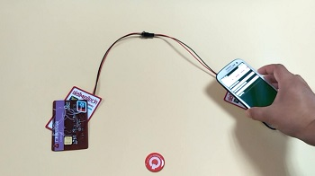
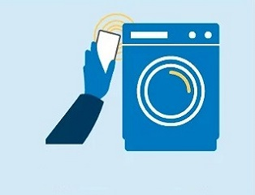
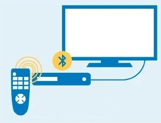
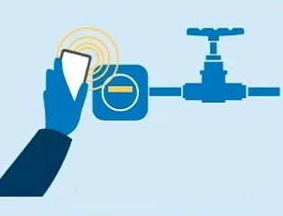
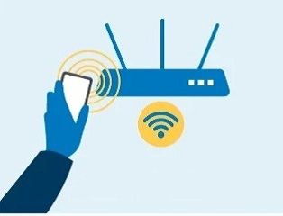
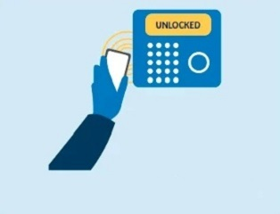
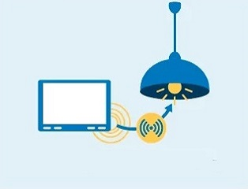
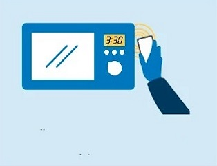

Near Field Communication System
What is NFC

Near field communication, abbreviated NFC, is a form of contactless communication between devices like smartphones or tablets.
Contactless communication allows a user to wave the smartphone over a NFC compatible device to send information without needing to touch the devices
together or go through multiple steps setting up a connection. Fast and convenient, NFC technology is popular in parts of Europe and Asia, and
is quickly spreading throughout the United States. Near field communication maintains interoperability between different wireless communication
methods like Bluetooth and other NFC standards including FeliCa — popular in Japan — through the NFC Forum. Founded in 2004 by Sony, Nokia, and Philips,
the forum enforces strict standards that manufacturers must meet when designing NFC compatible devices. This ensures that NFC is secure and remains
easy-to-use with different versions of the technology. Compatibility is the key to the growth of NFC as a popular payment and data communication method.
It must be able to communicate with other wireless technologies and be able to interact with different types of NFC transmissions.
The technology behind NFC allows a device, known as a reader, interrogator, or active device, to create a radio frequency current that
communicates with another NFC compatible device or a small NFC tag holding the information the reader wants. Passive devices, such as the NFC
tag in smart posters, store information and communicate with the reader but do not actively read other devices. Peer-to-peer communication through

two active devices is also a possibility with NFC. This allows both devices to send and receive information.
Both businesses and individuals benefit from near field communication technology. By integrating credit cards, subway tickets, and paper coupons all into
one device, a customer can board a train, pay for groceries, redeem coupons or store loyalty points, and even exchange contact information all with the
wave of a smartphone. Faster transaction times mean less waiting in line and happier customers. Fewer physical cards to carry around means the customer
is less likely to lose one or have it stolen. Who's currently in on the action with NFC technology and mobile payments? Google has launched Google Wallet
that supports MasterCard PayPass, PayPal offers money transfers between smartphones, and other companies are expected to follow suit. As the technology grows,
more NFC compatible smartphones will be available and more stores will offer NFC card readers for customer convenience.
Near Field Communication System
How it works
Bluetooth and Wi-Fi seem similar to near field communication on the surface. All three allow wireless communication and data exchange between digital devices like smartphones. Yet near field communication utilizes electromagnetic radio fields while technologies such as Bluetooth and Wi-Fi focus on radio transmissions instead.
Near field communication, or NFC for short, is an offshoot of radio-frequency identification (RFID) with the exception that NFC is designed for use by devices within close proximity to each other. Three forms of NFC technology exist: Type A, Type B, and FeliCa. All are similar but communicate in slightly different ways. FeliCa is commonly found in Japan.
Devices using NFC may be active or passive. A passive device, such as an NFC tag, contains information that other devices can read but does not read any information itself. Think of a passive device as a sign on a wall. Others can read the information, but the sign itself does nothing except transmit the info to authorized devices.
 Active devices can read information and send it. An active NFC device, like a smartphone, would not only be able to collect information from NFC tags, but it would also be able to exchange information with other compatible phones or devices and could even alter the information on the NFC tag if authorized to make such changes.
To ensure security, NFC often establishes a secure channel and uses encryption when sending sensitive information such as credit card numbers. Users can further protect their private data by keeping anti-virus software on their smartphones and adding a password to the phone so a thief cannot use it in the event that the smartphone is lost or stolen. For more information on the specifications and different forms of NFC technology, view the rest of our technology pages.
Active devices can read information and send it. An active NFC device, like a smartphone, would not only be able to collect information from NFC tags, but it would also be able to exchange information with other compatible phones or devices and could even alter the information on the NFC tag if authorized to make such changes.
To ensure security, NFC often establishes a secure channel and uses encryption when sending sensitive information such as credit card numbers. Users can further protect their private data by keeping anti-virus software on their smartphones and adding a password to the phone so a thief cannot use it in the event that the smartphone is lost or stolen. For more information on the specifications and different forms of NFC technology, view the rest of our technology pages.
Active devices can read information and send it. An active NFC device, like a smartphone, would not only be able to collect information from NFC tags, but it would also be able to exchange information with other compatible phones or devices and could even alter the information on the NFC tag if authorized to make such changes.
To ensure security, NFC often establishes a secure channel and uses encryption when sending sensitive information such as credit card numbers. Users can further protect their private data by keeping anti-virus software on their smartphones and adding a password to the phone so a thief cannot use it in the event that the smartphone is lost or stolen. For more information on the specifications and different forms of NFC technology, view the rest of our technology pages.
In Use

Appliance controlling

Bluetooth Pairing

Water Metering
Ambient setting

Joining Wi-Fi
Appliance Servicing

Disabling Residential Alarm

Wireless Commissioning

Setting Unconnected Appliances